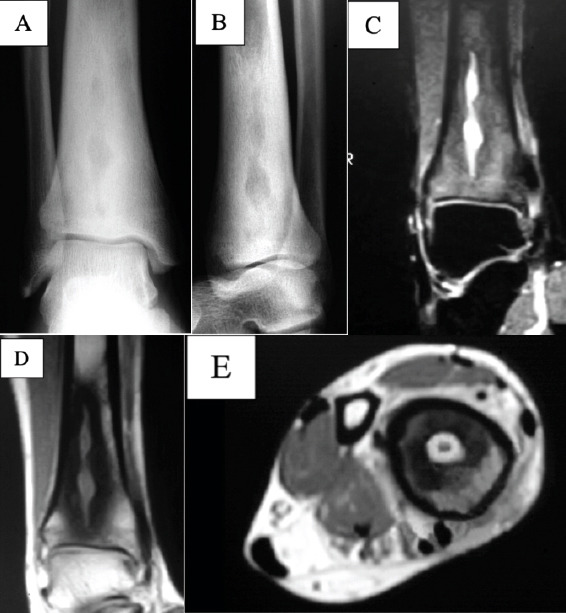

370 — Nhiễm trùng MSK: viêm tủy, Brodie, Charcot & hoại tử cân / MSK infection
Tags: pattern:nhiem-trung-msk vung:xuong-mo-mem
Mức chắc chắn (certainty): tổng hợp y văn (literature synthesis) — nhóm tự biên từ y văn mở, chưa gắn ca nguyên văn đơn lẻ.
1. Tổng quan — vi khuẩn ăn xương theo mạch + áp lực tủy + đường vào da
- Viêm xương tủy cấp (trẻ, metaphysis): vi khuẩn kẹt quai mạch hành xương — TẠI SAO phù lan >> ổ mủ + T1 tối lan rộng: mủ + xung huyết lan theo tủy trước khi khu trú.
- Brodie (bán cấp, miễn dịch tốt + vi khuẩn yếu): mủ khu trú có viền xơ — dấu quầng (penumbra: viền T1 sáng quanh ổ mủ) nhạy 75% đặc hiệu 99%.
- Bàn chân đái tháo đường: tắc mạch + mất cảm giác + loét — TẠI SAO khó phân biệt Charcot vs viêm tủy: cả 2 cùng phù + biến dạng; loét + đường dò (sinus tract) tới xương + khí = viêm tủy.
- Dấu bóng ma (ghost sign): xương chết (sequestrum) mất viền đặc trong ổ viêm mạn — TẠI SAO: xương chết không còn máu nuôi nên không đặc hóa theo.
- U phần mềm > 5 cm + sâu dưới mạc + không đồng nhất bắt buộc nghi sarcoma — TẠI SAO: kích thước + độ sâu là 2 yếu tố nguy cơ độc lập (bài 375: vách > 2 mm + MDM2).
- Viêm cân hoại tử: độc tố lan cân sâu — khí dọc cân + phù lan + sốc = mổ tối khẩn (tử vong tăng theo giờ!).
2. Gamut sưng-đau + sốt (Gamut)
- Phù lan + T1 tối rộng + sốt + cấy (+): viêm tủy cấp — kháng sinh + dẫn lưu/mổ.
- Ổ tròn viền xơ + penumbra + mạn không sốt: Brodie — nạo + cấy (50–78% tụ cầu, 20% âm tính).
- ĐTĐ + loét + dò tới xương + khí: viêm tủy bàn chân — cắt lọc + kháng sinh + offloading.
- Khí cân sâu + đau ngoài tổn thương + sốc: hoại tử cân — mổ cắt lọc tối khẩn + ICU.
3. Bảng so sánh phân biệt (ma trận đối chiếu)
| Thực thể (entity) | Hình ảnh điển hình | Chốt vào (rule-in) | Chốt loại (rule-out) | Gợi ý xác nhận |
|---|---|---|---|---|
| Viêm tủy cấp | Phù lan + T1 tối rộng + sequestrum/involucrum | Sốt + CRP + cấy máu/mủ | Ổ tròn penumbra → Brodie | KS + mổ dẫn lưu |
| Brodie | Ổ tròn viền xơ + penumbra T1 + hành/xương chày | Mạn + không sốt + penumbra | Phù lan + sốt → cấp | Nạo + cấy (âm tính vẫn nạo) |
| Charcot vs viêm tủy | Cả 2: phù + biến dạng; viêm tủy: loét + dò + khí | Dò tới xương/khí = viêm tủy | Không loét + giữa bàn chân → Charcot | Probe-to-bone + MRI + offloading |
| Hoại tử cân | Khí dọc cân sâu + phù lan + sốc | Khí + đau > tổn thương + sốc | Không khí → viêm mô tế bào | Mổ tối khẩn + KS phổ rộng |

(a–b) XR: sáng hình rắn viền xơ; (c–e) MRI: dịch trong ổ + ngấm viền. Nguồn: Warburton et al., JOCR 2024 Fig. 2, CC BY-NC-SA 4.0 (phi thương mại, chia sẻ tương tự).4. Protocol nhiễm trùng MSK
- MRI + gadolinium + cấy máu/mủ + CRP khi sưng-đau + sốt/loét; probe-to-bone bàn chân ĐTĐ; CT khi cần khí/sequestrum.
flowchart TD
A[Sưng đau + sốt/loét] --> B{Khí cân sâu?}
B -->|Có| C[Hoại tử cân: mổ tối khẩn]
B -->|Không| D{Loét + dò tới xương?}
D -->|Có| E[Viêm tủy: cắt lọc + KS]
D -->|Không| F{Ổ tròn + penumbra? Brodie}
5. Cạm bẫy
- Brodie gọi nhầm u sinh thiết rộng oan — penumbra + mạn + không sốt là nạo hạn chế + cấy.
- Charcot bó bột mù khi đang viêm tủy = lan hoại tử — probe-to-bone + MRI trước offloading.
- Chờ cấy mới mổ hoại tử cân = chết — khí + sốc là mổ ngay, cấy sau.
- Chỉ đọc T2FS/STIR bỏ qua T1W thường = nâng phù phản ứng thành viêm tủy — T1W còn mỡ lấm tấm là Charcot/phù (viêm thật đen hoàn toàn!), luôn đọc T1W trước!
6. Tự lượng giá — Blind Quiz
Ca 1 — Đau sưng cổ chân mạn 6 tháng, không sốt. Đọc XR + MRI.
- Hỏi: bờ ổ thế nào? U hay mủ? Có cần kháng sinh dài ngày khi cấy âm?
Bấm để hiện đáp án
- Dấu hiệu (findings): ổ sáng hình rắn viền xơ đặc + dịch trong + ngấm viền, không khối mềm.
- Chẩn đoán (diagnosis): áp-xe Brodie (viêm bán cấp) — nạo + cấy; cấy âm tính thì không cần kháng sinh dài ngày.
- Nguồn: Warburton et al., Fig. 2, CC BY-NC-SA 4.0.
Ca 2 — ĐTĐ + loét gan chân + dò tới xương + khí: Charcot hay viêm tủy? (Bảng mục 3.)
Bấm để hiện đáp án
- Viêm xương tủy bàn chân: cắt lọc + kháng sinh + offloading (Charcot đơn thuần không loét/dò/khí).
Ca 3 — Đau đùi dữ + khí dọc cân + sốc, da còn bình thường: viêm mô tế bào hay hoại tử cân? (Bảng mục 3.)
Bấm để hiện đáp án
- Viêm cân hoại tử: mổ cắt lọc tối khẩn + ICU + kháng sinh phổ rộng (tử vong tăng theo giờ).
Bài liên quan chéo
- 300 – Tổng quan MSK
- 330 – U xương (Brodie giả u)
- 222 – Viêm đốt sống (Pott vs vi khuẩn)
Không dùng để chẩn đoán độc lập khi chưa có người hướng dẫn.